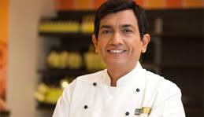
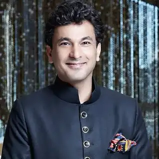
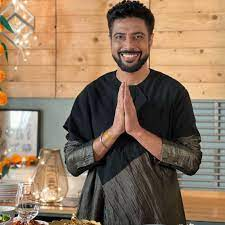

Home
Flavours
Chefs
Location
Top Famous Chefs for LAtte Coffee

Sanjeev Kapoor
Born 10 April 1964 Ambala, Haryana, India Education Institute of Hotel Management, New Delhi Occupation(s) Chef, Television Host & Entrepreneur Spouse Alyona Kapoor

Vikas Khanna
Born 14 November 1971 is an Indian chef, restaurateur, cookbook writer, filmmaker and humanitarian. He is one of the judges of MasterChef India since its beginning. He is based in New York City.

Ranveer Brar
Born 8 February 1978 Lucknow, Uttar Pradesh, India Education Institute of Hotel Management, Lucknow Occupation(s) Chef, television host Spouse Pallavi Brar